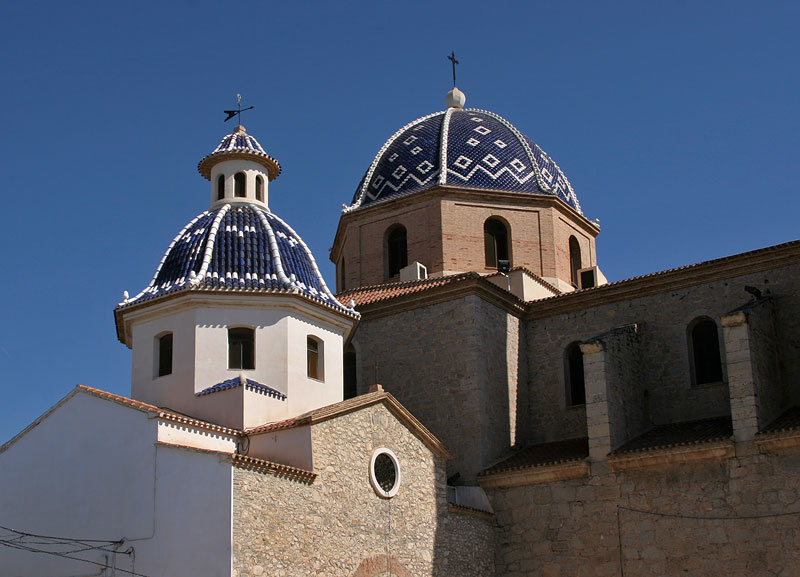
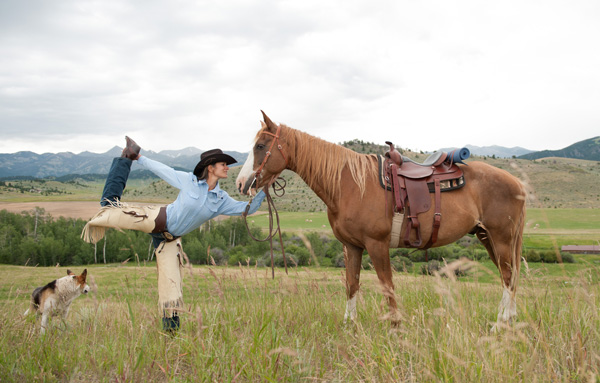
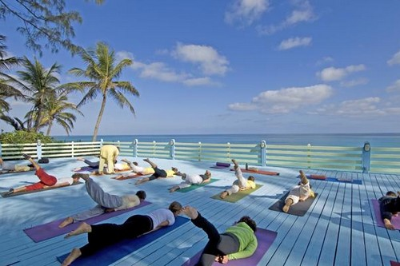
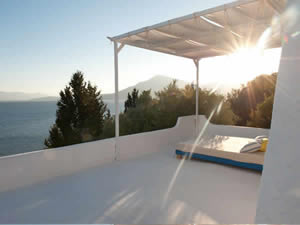
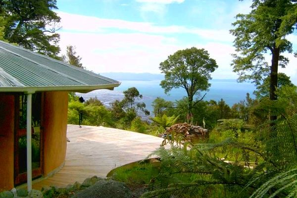

Yoga Retreats Around the World

Alicante, Spain
Yoga Breaks in Spain
Guests of Yoga Breaks in Spain stay in a quaint hotel right along the ocean. This isn’t your typical retreat with back-to-back yoga. Guests will participate in yoga twice-daily design to open your body.
Bozeman, Montana
Big Sky Yoga Retreats
These retreats are women-only emphasizing on the great outdoors in Big Sky Country. What makes Big Sky Yoga Retreats so special is that they incorporate yoga and horseback riding for their guests.
Paradise Island, Nassau Bahamas
Sivananda Ashram Yoga Retreat
Surrounded by the crystal blue waters and beautiful beaches this retreat is one where you follow a set schedule. You will get the full yogi Swami Sivananda experience and get a great experience as well as escape into positive thinking.
Silver Island, Greece
Silver Island Yoga
Sitting on 60 acres of an olive farm run by two sisters whose family has owned the quaint island for over fifty years. Guests will participate in two hour sunrise and sunset yoga sessions overlooking the beautiful ocean.